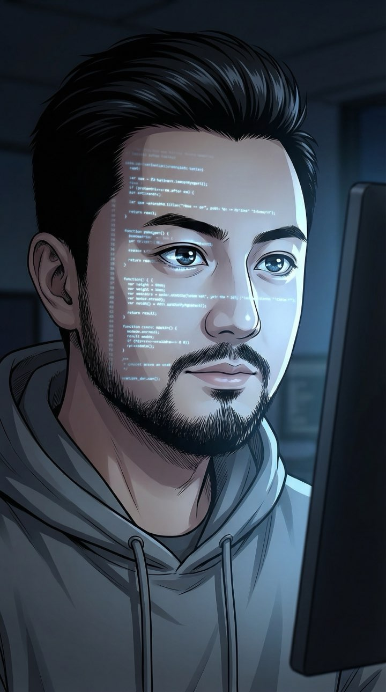
凌晨三点半，第47次调参。
说好的A轮到账就早睡的。骗谁呢。
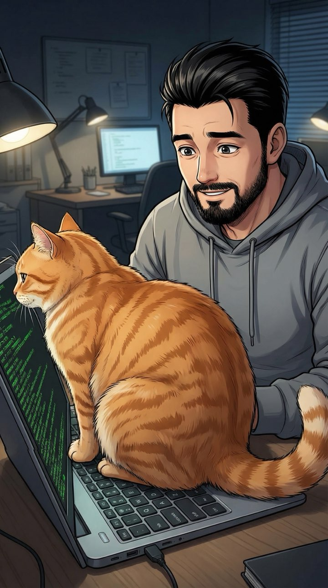
大橘一屁股坐在回车键上，终端疯狂滚屏。三个小时的调参成果，就这么被一只橘猫的屁股终结了。
这猫上辈子一定是个产品经理。专门在关键时刻乱按确认。
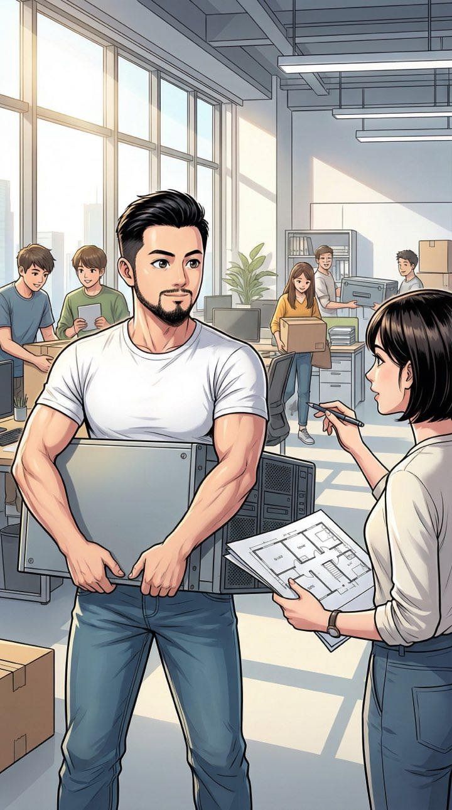
第二天，搬新办公室。我扛着一箱服务器，林婉清举着平面图指挥。
"服务器房放角落，隔音好。"
阳光很好。团队士气很高。A轮的钱终于让我们从地下室搬到了有窗户的地方。
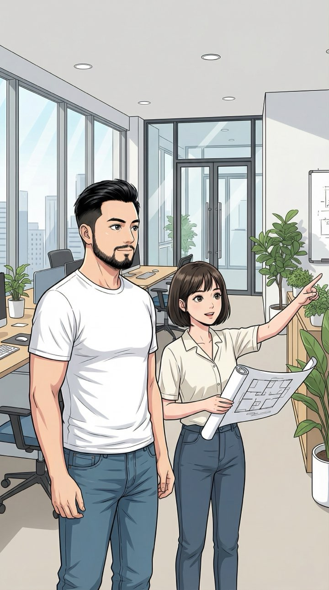
婉清指着角落说工位方案，我点头。
但我的余光，一直挂在门口。
新招的实习生今天第一天报到。HR说他简历很干净——太干净了。
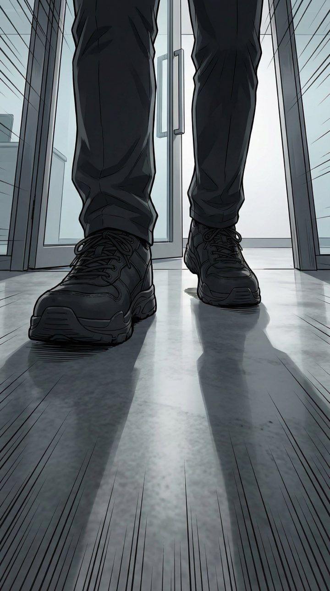
他走进来的时候，我看的不是他的脸，是他的脚。
双脚平行，与肩同宽，重心均匀分布。这个站姿……要么练过武术，要么——受过军事训练。
程序员不会这么站。
"欢迎啊小王，缺什么跟我说。"
我笑着伸手。他也笑着握上来。
握手力度42公斤以上。虎口有茧。
这不是程序员的手。
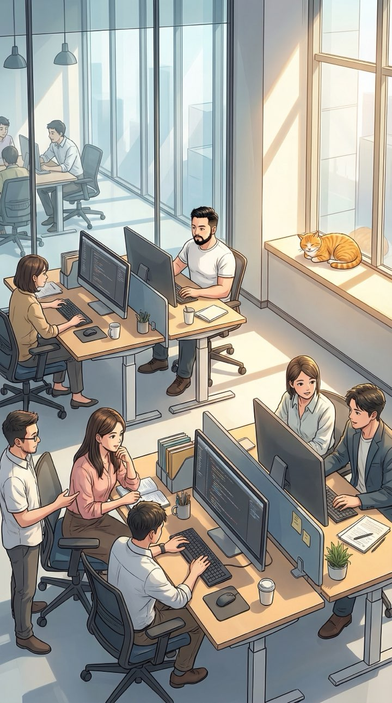
新办公室第一天。阳光洒进来，大橘在窗台上打盹，团队在整理工位。
一切看起来很好。除了那个站姿太标准的实习生。
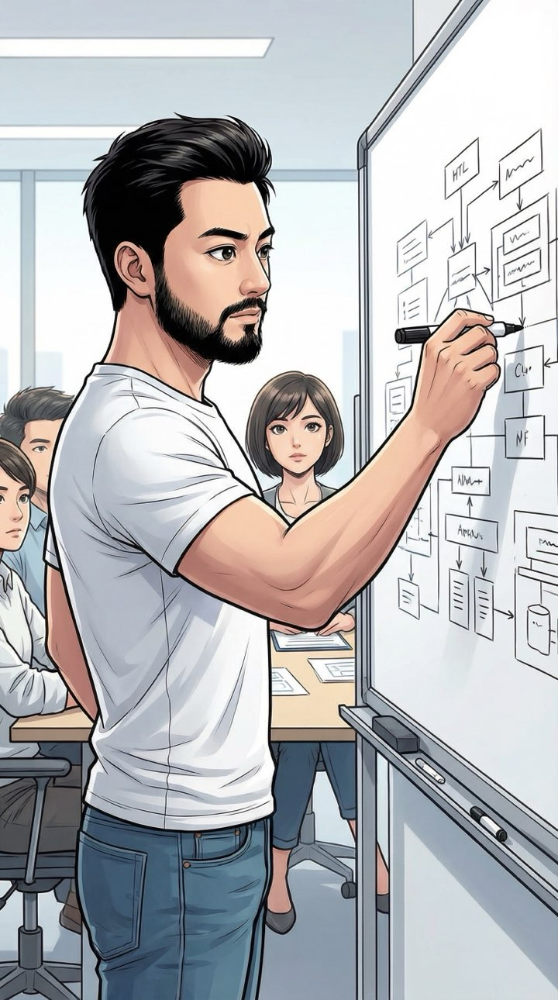
白天照常开会。我在白板上画模型架构，婉清和团队围坐讨论。
这个模型是我们的核心竞争力。准确率比行业标准高17个百分点。
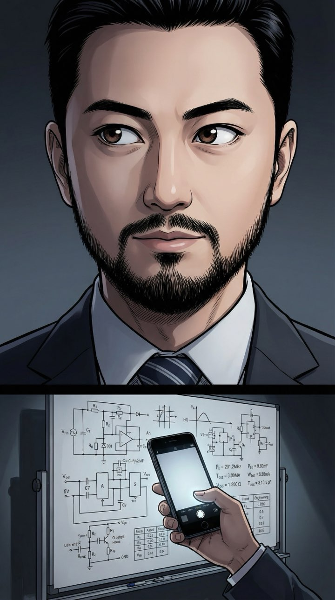
讲到一半，我余光看到了。
小王在拍白板。可以理解——实习生记笔记嘛。但他拍的角度，是在拍我写的模型参数，不是架构图。
架构图在左边。参数在右边。他的手机对准的是右边。
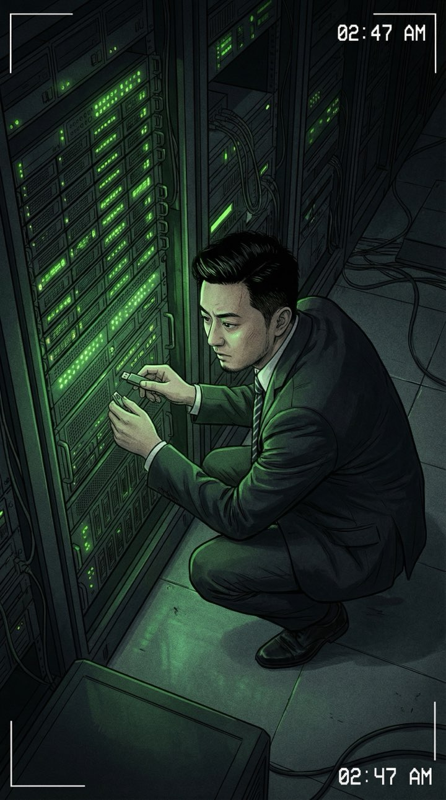
凌晨2点47分。服务器房的监控画面里，一个人影弯腰插入U盘。
是小王。
来得比我预期的早。
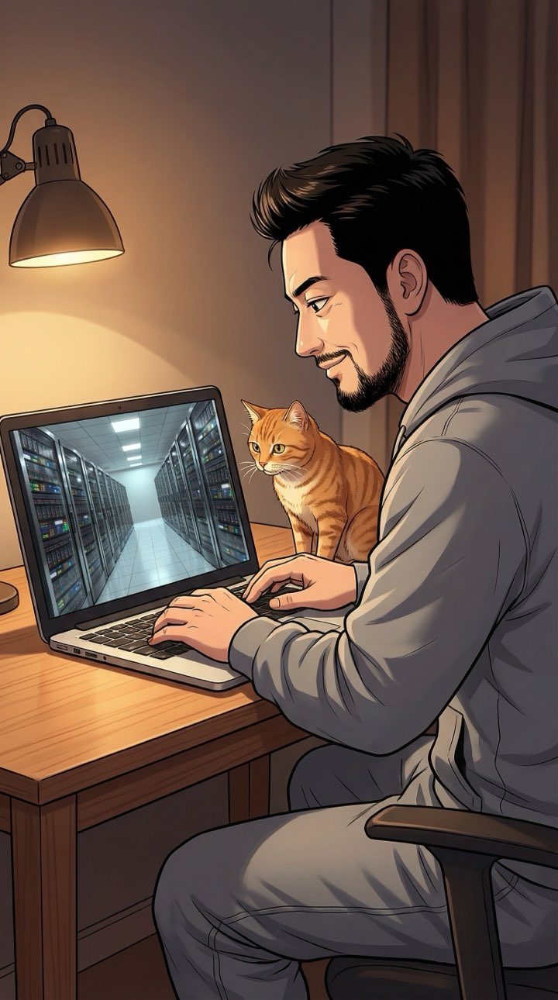
我靠在椅背上，看着笔记本里的监控画面，忍不住笑了一下。
大橘蹲在旁边，也盯着屏幕，尾巴一甩一甩的。
果然。小王同志，你的KPI完成得挺积极啊。
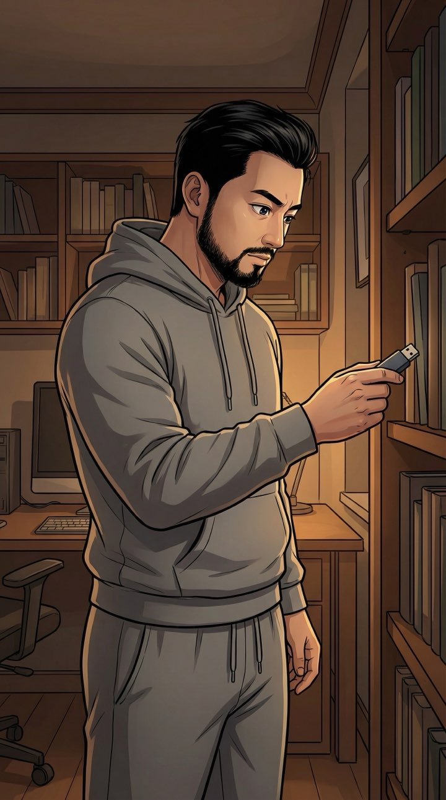
我走到书架前，拿出一个加密U盘，插进另一台电脑。
然后开始制作假数据包。
在部队我们管这叫"反向情报投喂"。给敌人他们想要的东西，只不过——全是假的。而且里面埋了追踪标记。
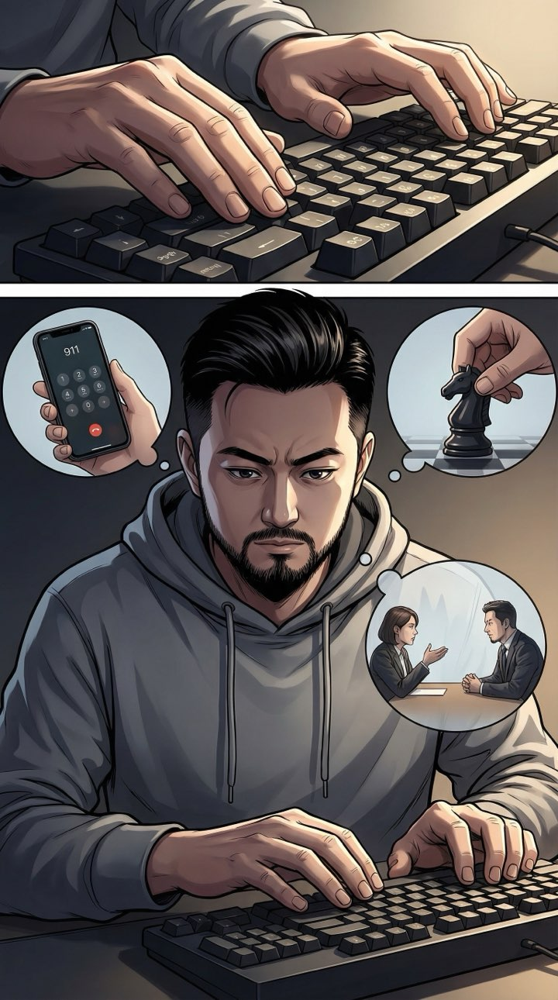
手指悬在键盘上方。三条路。
A — 当场揭穿，报警
最安全的做法。但我只能抓到一个棋子，下棋的人还在暗处。
B — 反向喂假情报，顺藤摸瓜 ✓
风险大。但能抓到下棋的人。
C — 私下约谈，给他一个机会
他看起来也不过25岁。也许是被逼的。
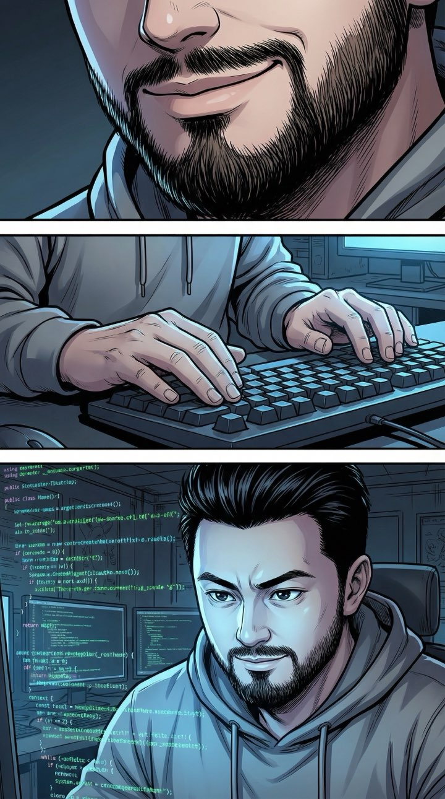
嘴角微微上扬。手指落在键盘上，开始打字。
选B。不是因为我不想善良——而是善良要等到弄清楚谁在棋盘对面。
菩萨心肠可以稍后再发，先把雷排了。
第二天，我买了一排奶茶带进办公室。笑嘻嘻地分给每个人。
保持日常。最好的伪装就是完全不伪装。
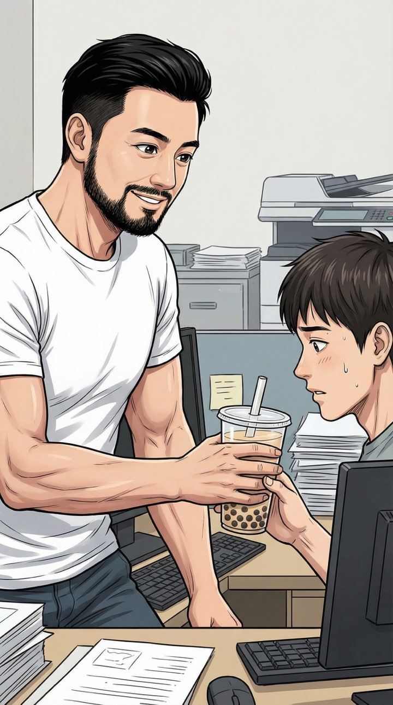
"小王，加班辛苦了。这个项目资料我放共享盘了，你直接拷。"
我递过去一杯奶茶，语气轻松得像在聊天气。
假数据包已经放好了。请享用。
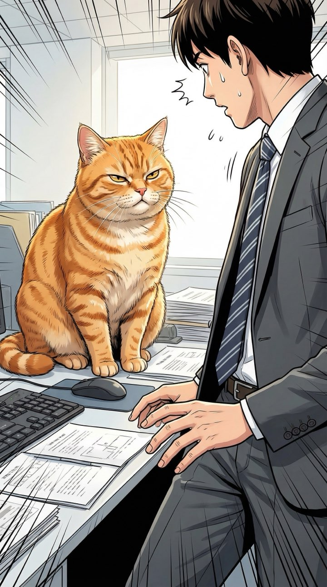
大橘不知道什么时候跳上了小王的桌子，直勾勾盯着他，眼神锐利得像个退休老干部在审查年轻干部的入党材料。
小王有点尴尬，伸手去摸。大橘一巴掌拍开。
连大橘都看出来了。这猫的直觉比安全部门靠谱。
当晚，小王如期出现在服务器房。U盘插入，数据开始传输。
他不知道的是：这次拷走的每一个字节里，都埋着我写的追踪标记。
鱼饵已经咽下去了。接下来，只需要等鱼线绷紧。
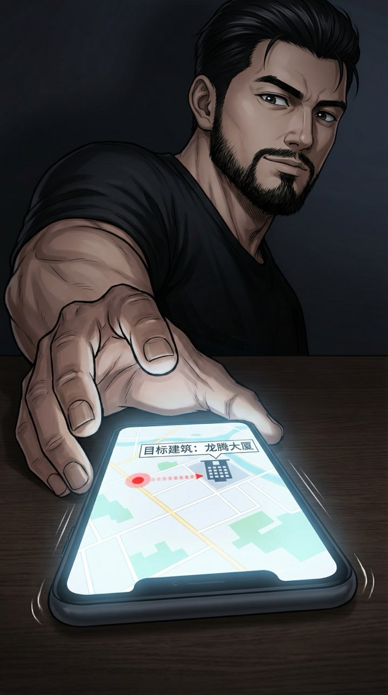
手机震动。屏幕上，一个红点从我们公司出发，沿三环走了二十分钟，停在了——
鼎盛大厦，32层。赵鹏飞的投资公司。
赵鹏飞。投了我A轮的人。有意思。
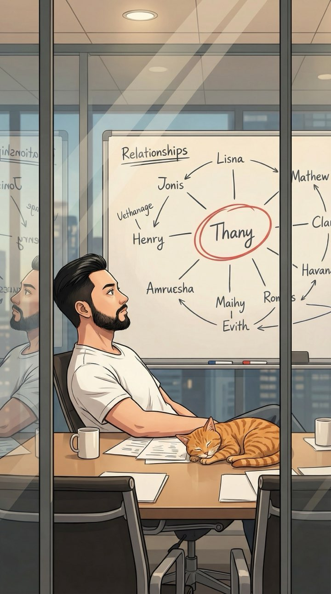
我把自己关在会议室里，白板上画满了关系网。赵鹏飞的名字被画了个红圈。
大橘趴在会议桌上，尾巴搭在我的笔记本边缘。
一个投资人，投你钱的同时派人偷你数据。不是为了钱——是为了控制。他想要的不是回报率，是这个模型本身。
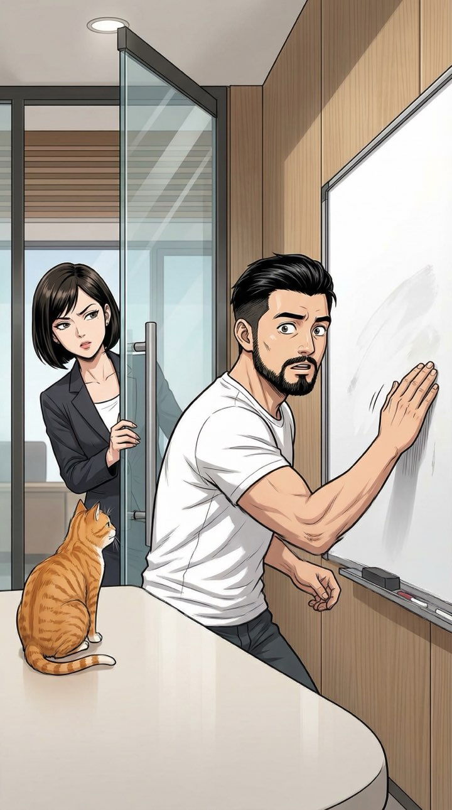
门被推开的一瞬间，我条件反射地伸手擦白板。
婉清站在门口，一挑眉。
"你什么时候学的情报分析？"
"看多了谍战剧。"
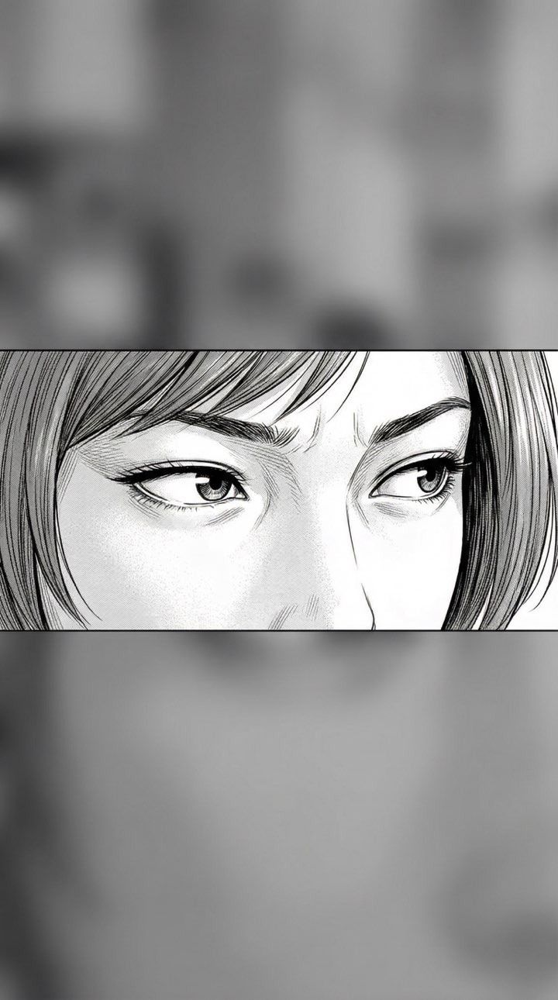
她没说话。但那个眼神我太熟悉了——
林婉清是我见过最聪明的人。这也意味着……她是最难糊弄的。
她记住了。她一定记住了。
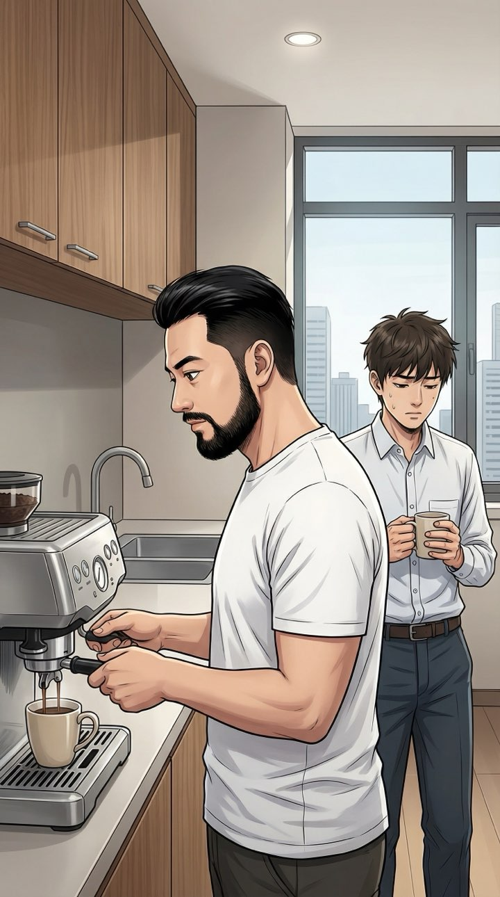
茶水间。我背对小王泡咖啡，语气随意得像在问天气。
"小王，你之前在哪家公司？"
"一家小创业公司，倒了。"
"是吗。什么方向的？"
他的心率从72跳到了95。我不用回头就能从他声音的微颤判断——这个问题让他紧张了。
深夜。我站在办公室落地窗前，俯瞰整座城市的灯火。
赵鹏飞，你选错了对手。你以为你在跟一个程序员下棋。
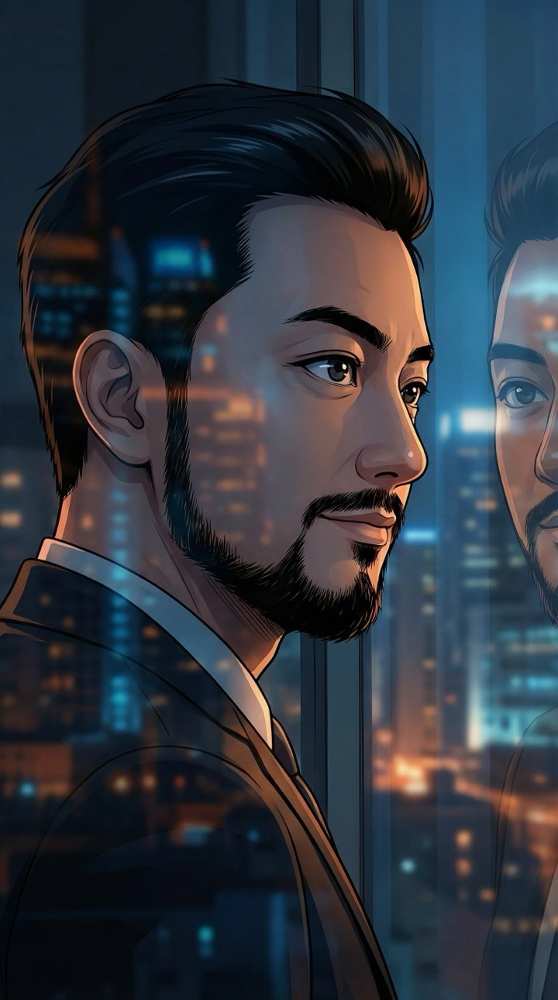
窗玻璃上映出城市和我的影子，重叠在一起。
但棋盘上坐着的……是一个从战场上退下来的人。
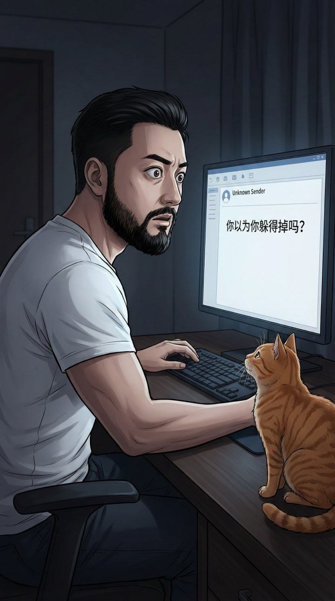
回到工位。一封加密邮件。发件人：unknown。
内容只有一行字——
"幽灵，好久不见。"
我的手停在鼠标上，指关节发白。
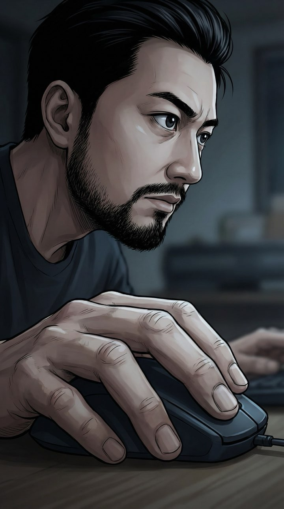
这个代号……只有部队里的人知道。
退役时所有档案都封存了。能查到这个名字的人，要么是老战友——要么，是有能力动用军方数据库的人。
不管是哪种，都不是好消息。
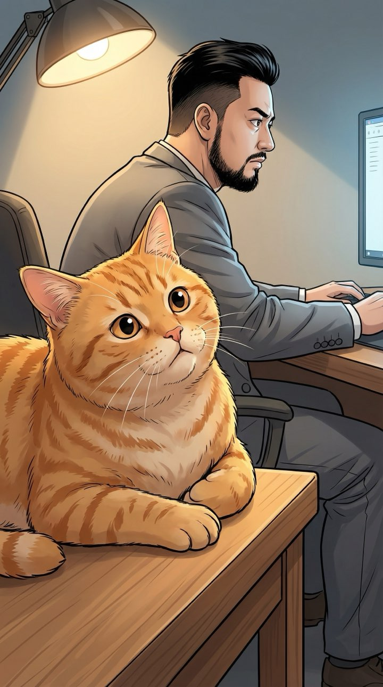
大橘从键盘上抬起头，歪着脑袋看我，耳朵竖得笔直。
它平时打雷都不带抬眼皮的。现在居然正襟危坐。
连大橘都意识到——气氛变了。
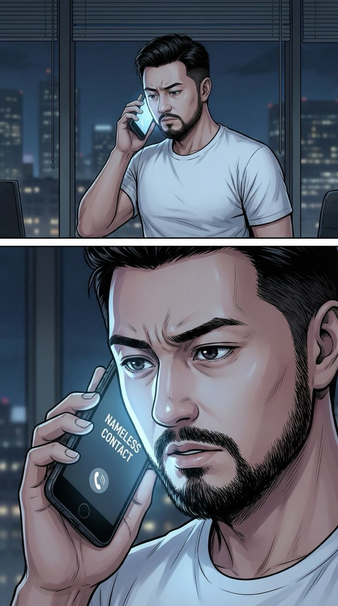
我翻出通讯录底部一个没有名字的号码。两年没拨过。
等了三声。
"……你终于来电话了。朱江，有人在查你。"
陈老。我两年没联系的前指挥官。他已经知道了。
这意味着——查我的人，级别很高。
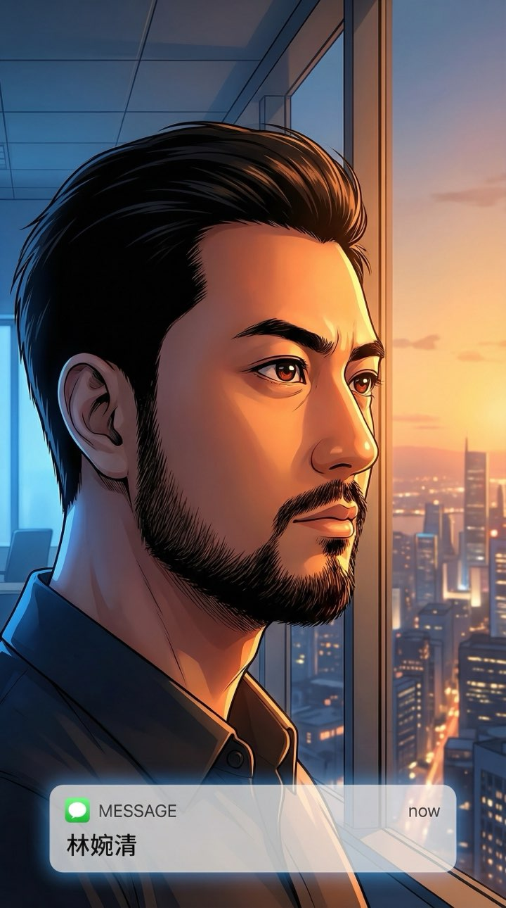
我挂了电话，看着窗外。
我以为我可以永远把过去埋掉。
看来……过去不同意。
手机震动。林婉清的消息：
"江哥，你以前到底是做什么的？我查了你简历上那家公司……它根本不存在。"
间谍已入局 · 假情报已投喂 · 但过去追上来了
产品路演当天，投影仪被动了手脚，数据全部替换成了竞品方案。
台下坐着赵鹏飞和三十位投资人。
我有90秒做出反应。
——而90秒，对幽灵来说，绰绰有余。